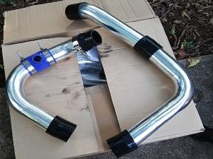

Custom Intercooler Install
I created this DIY to aid you with your intercooler install and show some tricks that might help along the way. I've seen a few related DIY's which are usually not completed to a level of safety, reliability and performance that can make a universal intercooler system seem daunting. First, be in the mindset of taking your time, doing it right and choosing the right parts without cutting corners. I started by searching around for an intercooler kit that would offer good flow and cooling at an affordable cost, only to be left without any option under $500. The CX Racing kit looked like a decent contender, but I opted for a custom DIY project using an affordable universal intercooler and piping kit. I choose an intercooler from Amazon for $65 with specs: 28" X 7" x 2.5" with 2.5" inlet/outlet. I was fairly skeptical going with something so cheap, but I thought I'd be a guinea pig and hopefully come out with some entertaining results.
 The next step was to get a universal piping kit with the right bends. Again, I opted for a kit from Amazon for $100. it came with (16) T bolt clamps and some strait and 90 deg couplers. After fitting the intercooler I decided to order (3) 45 degree couplers, a coupler with a 1" outlet for the diverter valve to mate to and a 2"-2.5" reducer coupler to fit the piping to the turbo. One of my biggest reasons for not getting a pre fabricated piping kit for the B6 was that they all seemed to have 2" piping and I didn't want to sacrafice for anything under 2.5" diameter. The picture on the left is of the piping kit and the first intercooler I bought which ended up being WAY to large for my stock bumper.
The next step was to get a universal piping kit with the right bends. Again, I opted for a kit from Amazon for $100. it came with (16) T bolt clamps and some strait and 90 deg couplers. After fitting the intercooler I decided to order (3) 45 degree couplers, a coupler with a 1" outlet for the diverter valve to mate to and a 2"-2.5" reducer coupler to fit the piping to the turbo. One of my biggest reasons for not getting a pre fabricated piping kit for the B6 was that they all seemed to have 2" piping and I didn't want to sacrafice for anything under 2.5" diameter. The picture on the left is of the piping kit and the first intercooler I bought which ended up being WAY to large for my stock bumper.
With everything needed to get started the first step was to remove the headlights so I could get to the 10mm bolts holding the bumper on. There should be (3) bolts on each side of the bumper. Some people say it is easier to get them off by removing the fender lining and using an extension. I on the other hand have done it that way and found it is MUCH easier to remove the headlights and remove them from above. after removing the bumper bolts you will need to remove two more hex bolts that are located close to the fog lights. Remove the fog light cover vents to get to the hex bolts. Now take the bumper off and be careful not to damage any of the wiring or hoses that are attached. You can remove the wiring and hoses or just kinda angle you bumper out of the way while you work, which is what I did.
I fitted the intercooler before removing any of the stock intercooler piping. 3/4" copper tubes worked perfectly for making a custom mount for the intercooler. I used a hammer to flatted them at the ends at the right angles and then used some large pliers to bend them to fit correctly. Some people might wait until after they plumb all the new piping to trim the bumper to make room for the new awesomeness, but I wanted to get it out of the way and make sure it fits before getting in too deep. I used a 3" cut off wheel to remove any part of the bumper that was in the way (more on this later). With everything mounted and fitting under the bumper it was time to remove all of the stock intercooler junk. Just follow from the turbo to the intake manifold and remove all the rubber piping. the piping under the radiator is actually part of the radiator support and can't be remove. Next remove the stock intercooler by removing the bolts that hold it in place. I was able to get it loose and finagle it around until it could be removed.
Now get some pipes out and mock up some designs. Use a marker to mark the pipes where you need them cut and make sure to cut the ends off at the correct angles so they mate up properly. Keep in mind that the couplers can't grab bends in the pipe very well and might be more prone to popping off under boost. This is greatly hightened if you do not bead the ends of the pipe. Make sure not to try and bend couplers in any way they aren't ment to bend... unless you want to be stranded on the side of the road after it pops off under boost. I ordered an aditional (3) 45 degree couplers so I could do this job the right way. My goal was to make the setup as efficient as possible and also minimize all coupler connections in the system. The picture on the left is a general mock up before I received the 45 degree couplers. All in all I am very pleased with how the fitment of the pipes worked out for the A4 B6.
Some of you are wondering why I haven't mentioned anything about the MAP sensor yet, well here's how I worked it out. I didn't want to get another piece just for the sensor to fit and I didn't want to add any more coupler connections, so I chopped up the stock intercooler and fabbed up the sensor mount to fit on my piping. I cut a hole just big enough for the sensor to fit into and then sanded the plastic mount to the round shape of the piping for a solid flush fitment. To get the rounded flush fitment I wrapped a piece of piping in coarse sandpaper and sanded until it had a nice flush contact area with the piping (took me about 45 minutes to sand). I then taped around where the mount was mocked up and sanded the piping down in that area. I used a very strong epoxy to glue the mount on and held it in place with tape until it dried. I like the fitment of it, right under the throttle body and out of view. I think this should hold up pretty nicely... we will see. I don't have any plans of running more than 20-25 psi.
The most important thing when doing a universal piping kit is to make sure all connections are secure and will never pop off under boost. Roling the edges is simply the best way to achive this. If you don't have access to a bead roller you can flare the ends of each pipe with a pair of heavy pliers. This is not the best way to do it because the edges of pipe could over time wear through the couplers, so it is important to try and counteract this by rounding the very edge of the pipe back in. It may be overkill but I used two T bolt clamps on a couple that I thought may be problematic. Did I need to, probably not but I feel better about it and I had some spare clamps. There are a few little tricks like spraying the pipe with hairspray (common), I have even heard of people using epoxy along with a clamp for a more permanent seal (I don't recommend this). At the end of the day whatever works works and the important thing is that everything is sealed and NEVER going to blow off under boost.
I am very happy with the way things turned out. My intake temps are WAY down, when it was up to 160 F* at WOT I am now right above ambient air temperature. This cheap and commonly hated tube and fin design intercooler has exceeded my expectations and proven that it can be a very effective tool in reducing intake air temperatures. I will do some logs of my IAT's and compare to previous logs for some nerd eye candy. Currently I am still using the stock k03s turbo, but their are plans of upgrading to a T3/T4 .63 .50 turbo in the near future. I hope this DIY will help you or someone else with their install or decision if a universal kit is the right choice for your application.